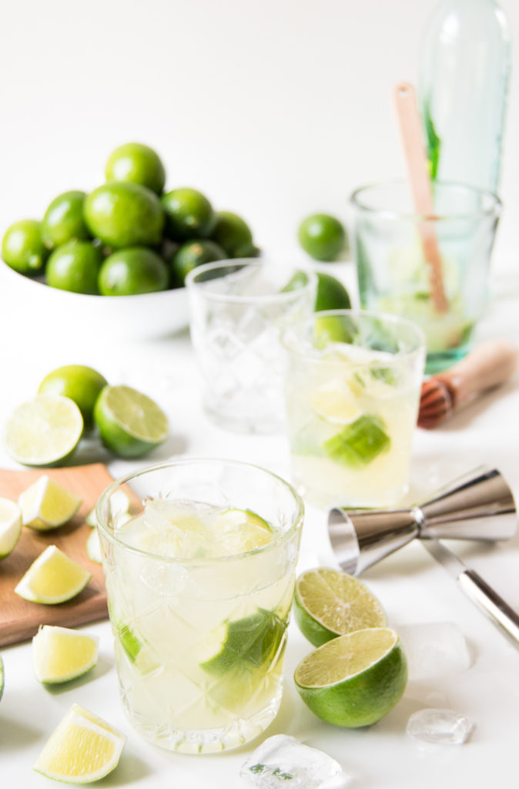

The classic caipirinha (pronouced kai-pee-reen-ya) is the mother of all Brazilian cocktails. Made from cachaça, a Brazilian distilled liquor crafted by the fermentation of raw sugarcane juice. This refreshing 4-ingredient drink, is the perfect treat for spending a great summer afternoon with your amigos and familia. It’s a delicious cocktail that pairs wonderfully with a churrasco, and all things grilled. Hello summer bbqs!
(makes 2 servings)
Officially, cachaça is a type of rum. Although they’re both made from sugar cane, the main difference between the two is that cachaça is made from the fermentation of fresh/raw sugarcane juice, while rum is made from sugarcane byproducts like molasses.